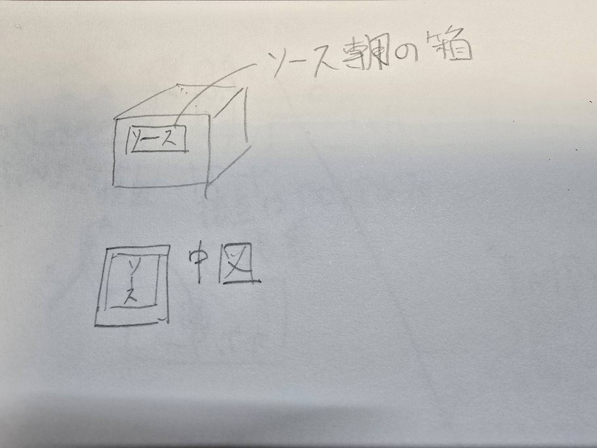
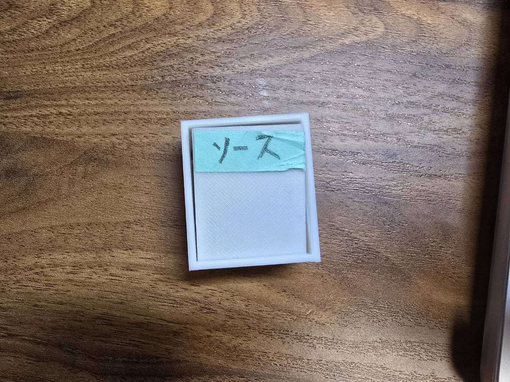
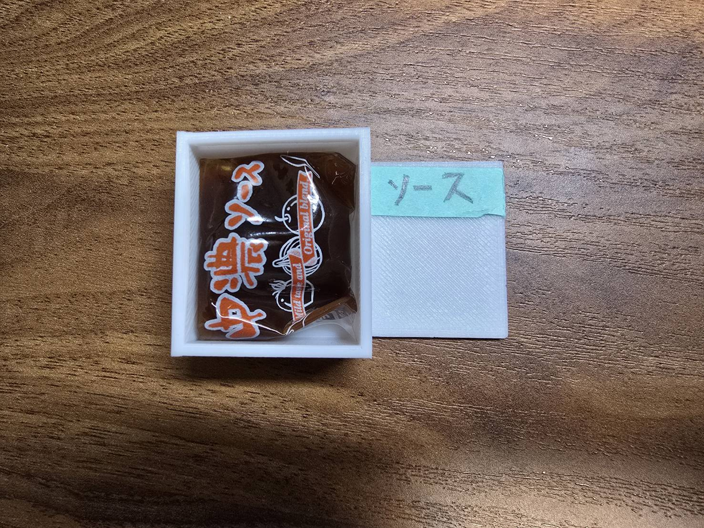

私たちの班の中では、『リュックの紐の左右の長さが違っている人』と『バイト中に小分けソースだけを買って行った人』という二つの案が出た。私は後者の人のためのプロダクトを考えた。
スケッチ
なぜ小分けのソースだけを買って行ったのかということを考えた時、1人だからボトルのソース入らない、あるいは外でお弁当を食べている時にソースが欲しくなった。というようなことが思い浮かんだ。
そして、小分けソース専用の箱があれば保存できるし複数個持ち運べるのでは。と思ってこの作品を作った。

完成品


以下はstlファイル。
stlファイル1
stlファイル2
まとめ
これがあればいつでもどこでも小分けソースが持ち運べ、使うことができる。
現在のバイト先である"キッチンオリジンの"ソースは2~3個くらい入った。他社のソースは入るかすらわからない。